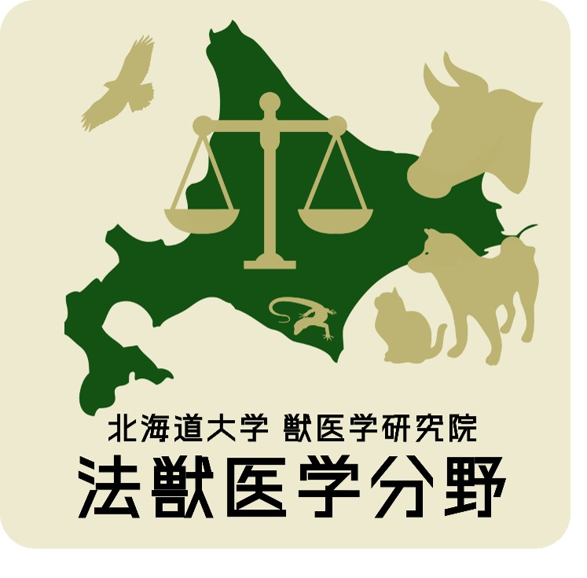

学生募集
動物虐待の鑑定解剖・多頭飼育崩壊の現場検証・犬猫の個体識別/親子鑑定・ふれあいによって伝播する動物由来感染症に関心のある学生を歓迎します。 研究テーマや配属・共同指導等について、まずはお気軽にご相談ください。

北海道大学 大学院獣医学研究院
公益財団法人住友電工グループ社会貢献基金
ヒトと社会の健全性が損なわれた結果起こる動物虐待では、動物の傷害や中毒の事案が後を絶ちません。動物虐待はヒトの家庭内虐待とLINKする社会的課題として認知されており、動物の福祉はヒトの福祉に直結する課題でもあります。現在、伴侶動物がヒトとともに高齢化し、家族化することで、現代社会においてヒトと動物の関係性は大きく連結し、ヒトの健康と福祉を動物や環境と一体としてとらえるOne Health/One Welfareの考えが、国連など国際機関をはじめ、浸透するようになりました。また伴侶動物のみならず、産業動物や野生動物、展示動物の福祉の重視は、既に国際的な潮流です。
一方で、ヒトの「法医学」と異なり、「法獣医学」では、魚類から哺乳類まで、様々な動物を取り扱う法科学の新しい分野として近年日本に導入されつつあります。
そこで、北海道大学大学院獣医学研究院がこれまで培ってきた法獣医学と化学分析能力、国内外の研究ネットワークで常時入手している伴侶動物、動物園や野生動物試料を基に、警察からの鑑定依頼を受けると同時に、特に種差に着目した化学物質の中毒や感受性、動物の病態や死後変化の種差に関する研究を推進し、「法獣医学」についてヒトと動物の福祉に寄与することを目指します。
獣医学の新しい分野「法獣医学」で、是非、一緒に学んでみませんか？


準備中